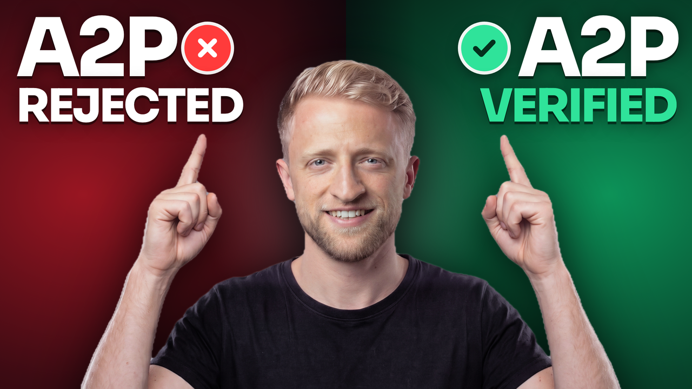
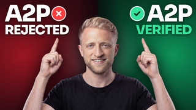

A2P thumbnail: the final version
Wed Nov 25. One version. Layout, words and pointing are the ones you approved. The mouth is the one you liked (your number three). Three measured corrections against your real 4K frame: your face is 4.5 percent wider and now sits inside your real proportions, a red cast is taken out of skin and hair, and the teeth are a little whiter. The shirt is a clean, deep black.
1. The final version


search size and sidebar sizeA2P REJECTED VERIFIED
Download thumbnail 1Next to the videos you compete with
At search size, inside a row of the A2P videos that rank today (pulled from YouTube on Tue Nov 24).